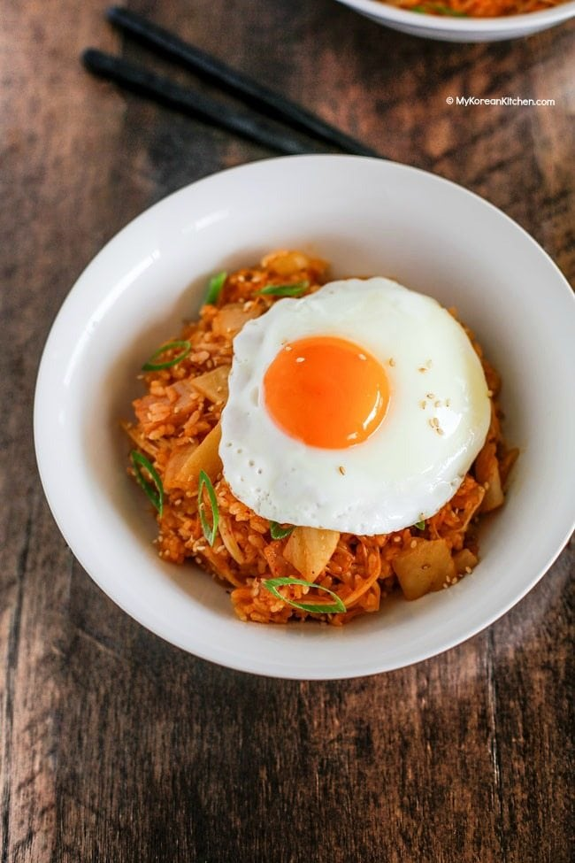
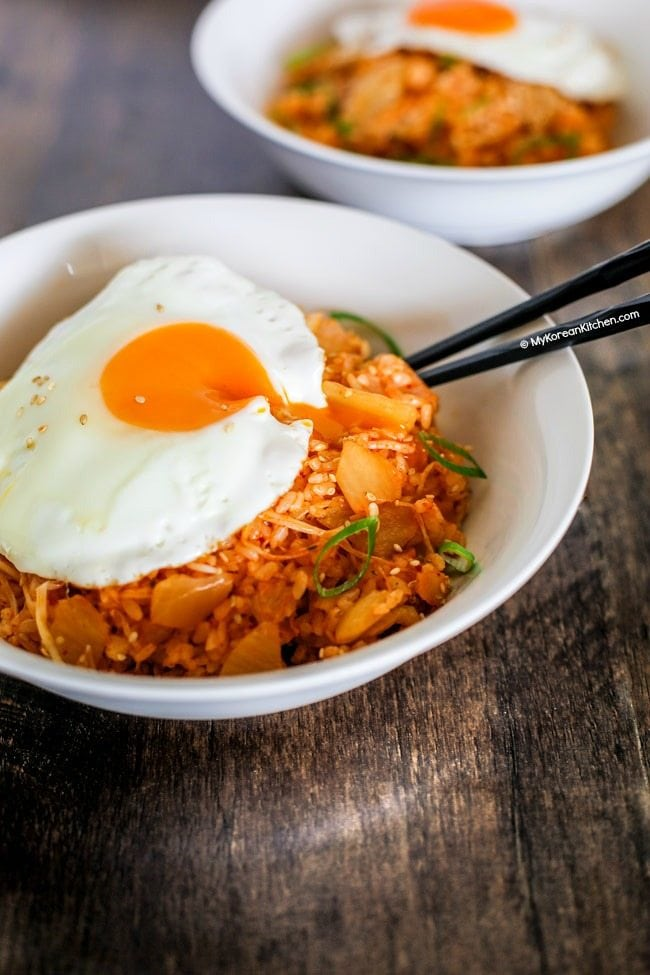
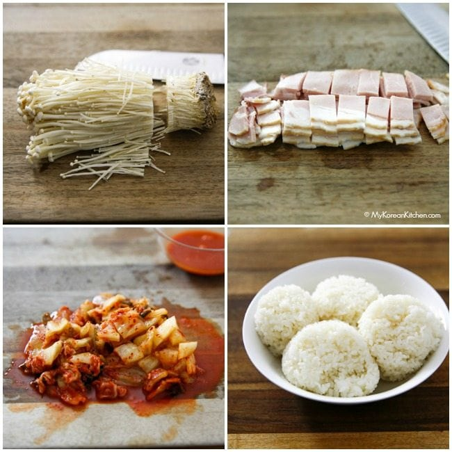
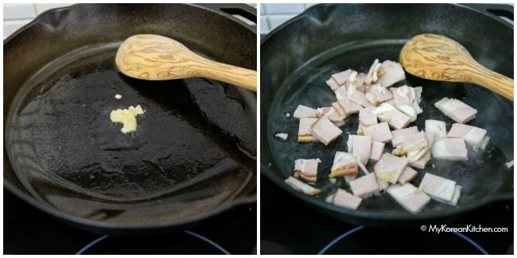
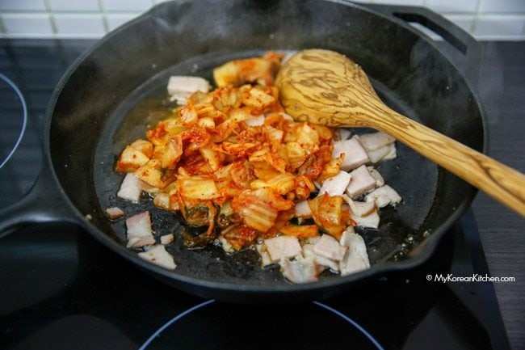
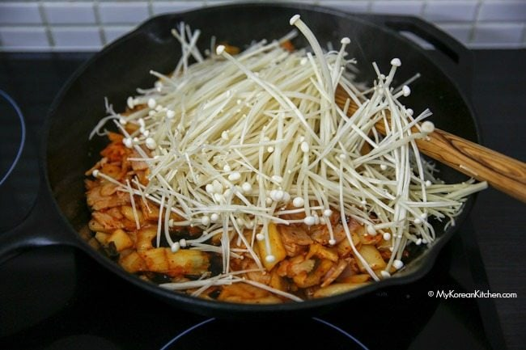
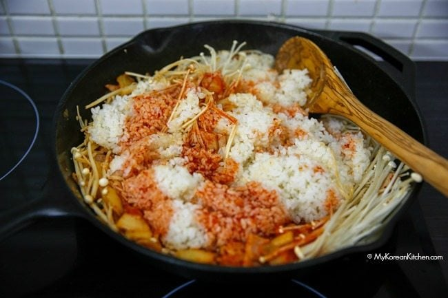
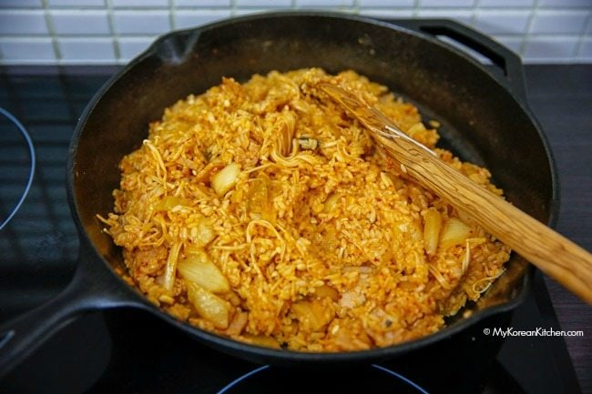
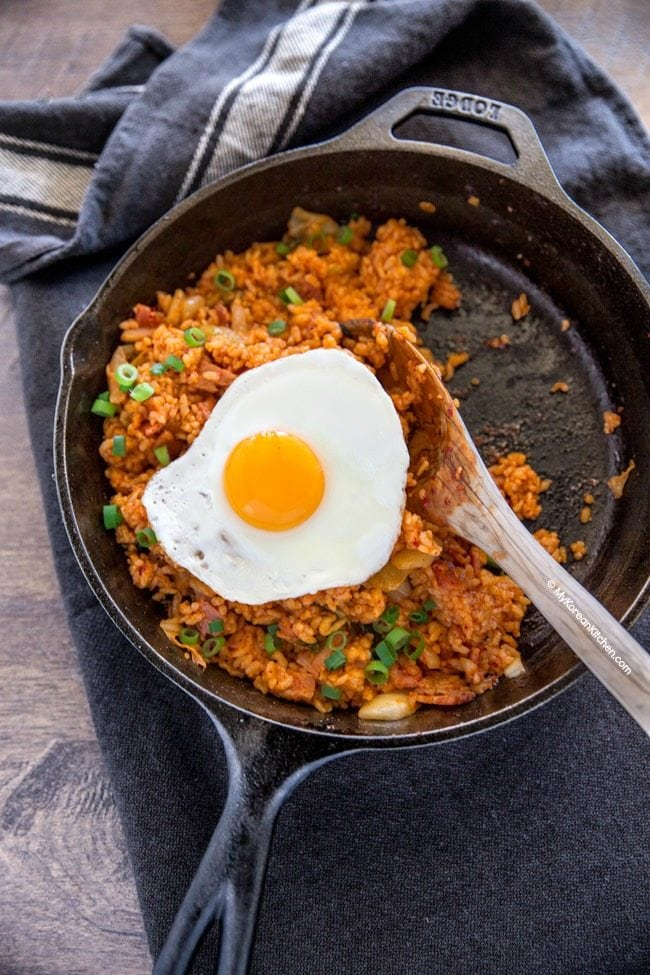

Kimchi Fried Rice
What is Kimchi Fried Rice?
Kimchi fried rice (Kimchi Bokkeumbap, 김치 볶음밥) is a type of Korean fried rice and it is predominantly cooked with kimchi (obviously!) To give it more texture and flavor a variety of meat and/or vegetables are often added.
So, when I make my kimchi fried rice I typically add bacon and mushrooms (particularly enoki mushrooms). Bacon gives a nice smoky flavor and enoki mushrooms give a nice crunchy feel to the dish. Besides, my husband loves meat just like any other male (I think?), so he won’t accept my kimchi fried rice unless it contains some meat in it! lol
Kimchi fried rice is one of the most popular ways to use up your old ripened kimchi along with kimchi jjigae (Kimchi stew) and Kimchi pancake.

Best rice for kimchi fried rice
Kimchi fried rice is also a great way to use up some of your leftover steamed rice.
You probably heard that one or two day old rice fries better? Let me put this into context. Typically, freshly steamed rice is moist and soft and when they get stir fried, they can go gluggy, which isn’t very nice in a stir fry dish!
But, if you can manage the water amount well, you can use the freshly steamed rice as well. Just make the rice intentionally drier by adding slightly less water when you steam it.

How to season kimchi fried rice
My last tip I want to share today is the best way to season the Kimchi fried rice. Which is using well fermented kimchi juice (from a kimchi container). I don’t normally add anything else – no gochujang (Korean chilli paste), no gochugaru (Korean chilli flakes) – unless I’m short of the kimchi juice! Of course, you can add either of them per your preference. And if you do, they will give you an extra spice kick for sure!
Anyway, I hope you enjoy my recipe!
P.S. If you like this recipe, you might also like my kimchi udon noodle recipe. Try it. It’s super addictive!
Ingredients for Kimchi Fried Rice (Kimchi Bokkeumbap, 4 servings)

- 1 cup kimchi (*see notes), cut into thumbnail size pieces
- 150g / 5.3 ounces bacon, cut into thumbnail size pieces
- (optional) 1 pack enoki mushrooms (200g, 7 ounces), root removed, rinse the mushrooms in cold water and drain.
- 3 cups steamed short/medium grain rice - if it is freshly cooked, leave it out for 5 to 10 mins at room temperature to cool down before cooking.
- 4 x-large eggs, cooked sunny side up or per your preference
- 1/2 tsp minced garlic
- 1/4 cup kimchi juice (*see notes) - this liquid is from the bottom of the kimchi container
- 1/2 Tbsp sesame oil
- 1/2 Tbsp cooking oil
- 1 to 2 Tbsp roasted sesame seeds, to garnish
- (optional) 1/2 stalk green onion, thinly sliced
- (optional) roasted seasoned seaweed, shredded
Note
- Ideally the kimchi is at least 2 weeks old. If not, add 1/2 tsp rice vinegar into the kimchi juice to make it sour.
- Obtaining 1/4 cup of kimchi juice can be difficult if your kimchi is fairly new. In that case, use 2 1/2 Tbsp kimchi juice and 1 Tbsp gochujang instead. If you want it to be not spicy, you can add 1 Tbsp soy sauce instead of gochujang.
- 1 Tbsp = 15 ml, 1 Cup = 250 ml
- If you want to learn more about Korean ingredients, check my essential Korean cooking ingredients list!
How to make Kimchi Fried Rice
- On medium high heat preheat a pan/work and once heated, add the cooking oil and spread it well with a spatula.
- Add the garlic, stir it fast for about 10 seconds. Then add the bacon and stir it well until half of it is cooked.

- Add the Kimchi and stir until 80% of it is cooked

- (Optional) Add the mushrooms and mix them well for a few seconds. Reduce the heat to medimum-medium low.

- Add the rice and the kimchi juice. Mix all of them together well and thoroughly.

- Add the sesame oil and mix them well. Remove from the heat.

- Serve the Kimchi fried rice on a plate. Garnish with the sesame seeds, green onion and seaweed strips. (Garnish is all optional). Place the cooked egg on top. Enjoy!
